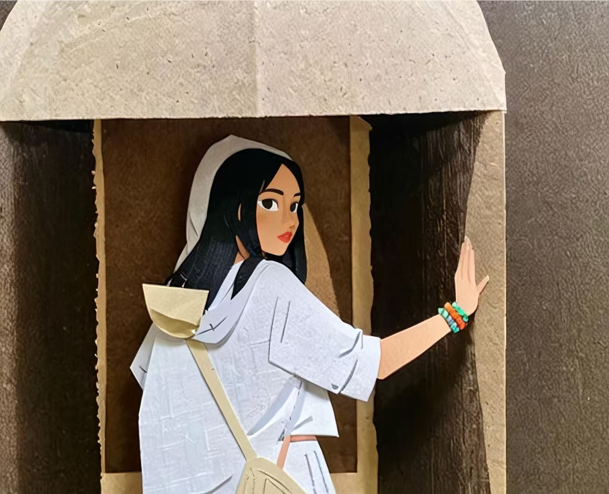

Claude 官方博客发布了一份给创业者的 AI 原生应用创业手册，底层诉求是让更多创业者选择 Claude，但主题却很高屋建瓴。
创业链条被AI压缩了
不懂技术的人能跑出软件产品，只懂技术的人也能做商业化运营，这是现状。创业链条上具体的事情没变，但这条链路被 AI 压缩了，真正的差异化转向了「有没有好点子」。
以前衡量一个创业团队，问的是「你们能不能把这件事做出来」。现在这个问题的答案越来越接近「能」——AI 把这个门槛几乎抹平了。所以真正的问题变成了：你做的这件事，值不值得做？
这也意味着创业的失败点在前移。不是死在产品做不出来，而是死在做出来了却发现没人要。AI 原生时代，验证比构建更重要。
现在搭建的是AI军团
创始人仍然需要搭建团队，但现在搭建的是 AI 军团了。市场研究、写文档、写代码、产品设计、运营流程——这条链路上大多数事情，都可以交给 AI Agent 去做。创始人从「亲自干活＋管人」，变成「指挥 AI 干活」的系统设计者。判断什么该做、什么不该做，比知道怎么做更重要。AI 是执行层，人是方向层——这个分工越来越清晰。
Anthropic 拆解的四个阶段
Anthropic 在手册里把 AI 原生创业路径拆成了四个阶段，每个阶段 AI 扮演的角色不同，创始人的重心也不同。
1、Idea Stage（想法验证）——AI做研究院
很多AI创业死法是一天做出 demo、一周觉得自己 PMF、一个月后发现没人留存，所以建议在开始的时候不要着急build。问问Claude这几个问题："为什么它会失败？""用户为什么不会买？""竞争对手为什么会赢？"，不要问"这个 idea 好不好？"通过这些问题判定，这个idea是不是真的值得做。
2、MVP Stage（最小产品）——AI做产品+工程师
这个阶段核心要求是，必须关注上下文，管理好CLAUDE.md文件，避免AI在coding的时候从零开始。做出MVP之后，用肖恩·埃利斯（增长黑客的作者）测试，询问活跃用户："如果您无法再使用此产品，您会作何感想？"如果超过 40% 的用户回答"非常失望"，这就是一个有意义的产品市场契合度 (PMF) 指标，来判断用户会不会持续使用你的产品。
3、Launch Stage（启动增长）——AI做运营
要求创始人从builder身份转向系统设计者，判断规模化可能，同时解决MVP阶段大概率会存在的dirty code。
4、Scale Stage（规模化）——AI管公司（？这里打个问号）
其实这个阶段貌似AI能完成的就有限了，虽然Anthropic说AI能够帮你管理公司，但显然复杂程度远远超过做一个MVP吧。
这是广告，也是一种下注
这篇博客当然是 Anthropic 的广告。但所有厉害的广告，本质都在下注未来——它不是在描述现在，而是在塑造一种它希望成真的叙事。
Anthropic 赌的是：未来最强的创始人，不一定是最会写代码的人。当 AI 把执行力变成标配，稀缺的是判断力——判断什么值得做，以及为什么现在是做它的时候。
创业生命周期被重置，创始人角色被重新定义。AI 原生创业的核心，不是用 AI 提效，而是重新思考一家公司该是什么样子的。十个人，能不能做出一家独角兽？Anthropic 的答案是：可以，而且这已经在发生了。